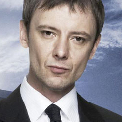

| Home | The Doctors | The Villains | |
|
|||
|
The Master is a recurring character in the British science fiction television series Doctor Who and its associated spin-off works. The character is a renegade alien Time Lord and the archenemy of the title character the Doctor. The Master has been played by multiple actors since the character's introduction in 1971. Within the show, this is varyingly explained as the Master taking possession of other characters' bodies, or as a consequence of regeneration, a biological attribute allowing Time Lords to survive fatal injuries. The role was originated by Roger Delgado. Delgado portrayed the Master from 1971 until his death in 1973.[1] From 1976 until the show's cancellation in 1989, the Master was portrayed by a succession of actors:Peter Pratt, Geoffrey Beevers and Anthony Ainley. Gordon Tipple and Eric Roberts then took on the role for the 1996 Doctor WhoTV movie. Since the show's revival in 2005, the Master has been portrayed by Derek Jacobi, John Simm and Michelle Gomez. |